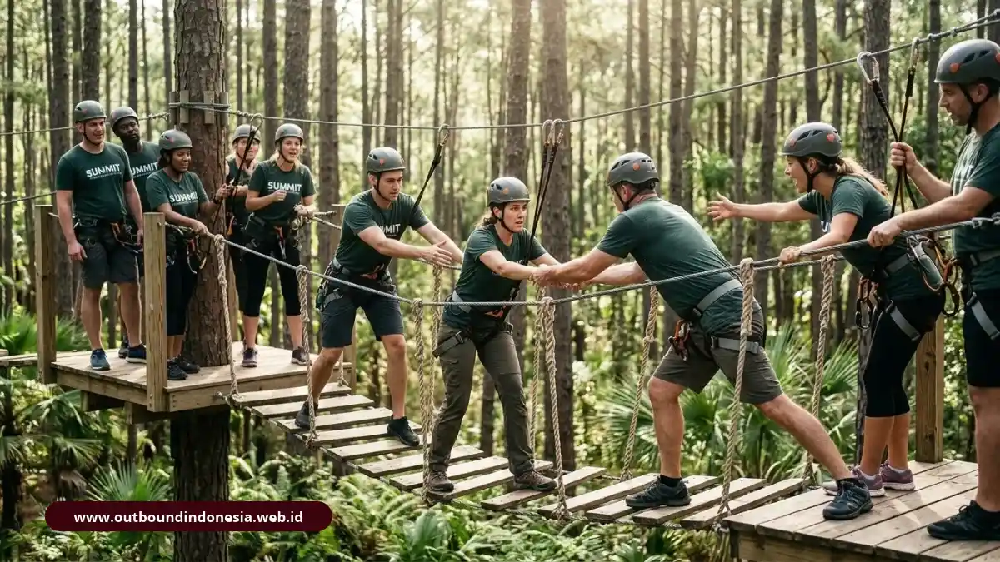

Pengertian outbound training adalah metode pelatihan berbasis pengalaman yang memakai simulasi dan permainan terarah, umumnya di ruang terbuka, untuk melatih kerja sama, kepemimpinan, komunikasi, dan pemecahan masalah.
Berbeda dari rekreasi biasa, kegiatan ini dipandu fasilitator dan ditutup refleksi agar pelajarannya bisa dipakai di tempat kerja.
Apa Itu Outbound Training?
Outbound training adalah program pengembangan diri dan tim yang belajar lewat pengalaman langsung dalam simulasi terstruktur. Peserta mencoba, merasakan, lalu merefleksikan pengalamannya bersama fasilitator.
Program ini dipakai perusahaan, sekolah, instansi, dan organisasi untuk memperkuat soft skill. Pesertanya bisa karyawan baru, tim lintas divisi, jajaran manajer, maupun pelajar.
Kegiatan biasanya berlangsung setengah hari sampai beberapa hari, di lapangan terbuka, area wisata alam, atau ruang indoor yang dimodifikasi.
Batasannya perlu dipahami. Outbound melatih sikap dan kebiasaan kerja sama, tetapi tidak menggantikan pelatihan teknis yang menuntut keterampilan spesifik. Hasilnya juga bergantung pada kualitas rancangan, pemandu, dan tindak lanjut setelah acara.
Dari Mana Asal Istilah Outbound?
Gaya outbound berasal dari Outward Bound, sebuah institusi pendidikan berbasis pengalaman yang didirikan di Wales pada tahun 1941 berdasarkan konsep yang dikembangkan oleh Kurt Hahn dan Lawrence Holt.
Program awalnya melatih ketahanan mental dan kerja sama para pelaut muda. Frasa "outward bound" sendiri berasal dari istilah pelayaran untuk kapal yang meninggalkan pelabuhan menuju laut lepas.
Di Indonesia, istilah ini sering diartikan sebagai keluar dari batas kenyamanan, yaitu menghadapi situasi baru yang mendorong peserta tumbuh. Informasi lebih lanjut tentang organisasi aslinya tersedia di situs resmi Outward Bound International di https://www.outwardbound.net.
Apa Filosofi Experiential Learning di Balik Outbound?
Experiential learning adalah pendekatan belajar yang menempatkan pengalaman langsung sebagai sumber pemahaman. Orang belajar dari apa yang dialami, dirasakan, dan direnungkan, bukan hanya dari ceramah.
Teori yang paling sering dirujuk ditulis oleh David Kolb dan diterbitkan pada 1984. Dalam kerangkanya, pembelajaran berlangsung melalui empat tahap yang berulang.
Dalam outbound, filosofi ini tampak jelas: peserta tidak diberi daftar prinsip kerja sama, melainkan dihadapkan pada tugas yang hanya bisa selesai bila mereka benar-benar bekerja sama, lalu diajak menyimpulkan sendiri apa yang terjadi.
Apa Bedanya Outbound Training dengan Outing dan Gathering?
Outbound training berorientasi pada pembelajaran terukur dengan fasilitator, sedangkan outing berfokus pada rekreasi dan gathering pada keakraban. Ketiganya sah dipakai, tetapi tujuan dan hasilnya berbeda.
| Aspek | Outbound Training | Outing | Gathering |
|---|---|---|---|
| Tujuan utama | Mengembangkan kompetensi dan perilaku kerja | Refreshing dan hiburan | Mempererat keakraban dan apresiasi |
| Metode | Simulasi terstruktur dan refleksi | Wisata, permainan bebas | Acara santai, makan bersama, hiburan |
| Fasilitator | Wajib ada, terlatih memandu refleksi | Biasanya pemandu wisata atau panitia | Panitia atau pengisi acara |
| Hasil yang dituju | Perubahan perilaku yang bisa dievaluasi | Suasana segar dan kenangan bersama | Kedekatan dan kebersamaan |
| Evaluasi | Ada, mengacu pada target kompetensi | Umumnya tidak ada | Umumnya tidak ada |
Perusahaan sering menggabungkan ketiganya dalam satu agenda. Masalah muncul ketika acara yang sebenarnya outing diberi label pelatihan, sehingga manajemen mengharapkan perubahan perilaku yang memang tidak dirancang.
Apa Saja Ciri-Ciri Outbound Training yang Efektif?
Outbound training yang efektif memiliki lima ciri: simulasi di ruang terbuka, debriefing terstruktur, keterlibatan fisik dan mental, target kompetensi terukur, dan pemanduan fasilitator kompeten.
- Simulasi di ruang terbuka: Aktivitas dirancang sebagai miniatur situasi kerja, seperti membagi peran, menghadapi waktu terbatas, atau menyelesaikan masalah tanpa petunjuk lengkap.
- Debriefing terstruktur: Setiap simulasi diikuti diskusi tentang apa yang terjadi, mengapa terjadi, dan apa kaitannya dengan pekerjaan.
- Keterlibatan fisik dan mental: Peserta bergerak sekaligus berpikir, sehingga pengalaman lebih membekas dibanding duduk mendengarkan materi.
- Target kompetensi terukur: Program dimulai dari kebutuhan, misalnya komunikasi antardivisi atau ketegasan pengambilan keputusan, lalu aktivitas dipilih mengikuti target itu.
- Dipandu fasilitator kompeten: Fasilitator memahami dinamika kelompok, mengelola keselamatan, dan mampu mengarahkan refleksi tanpa menggurui.
Jika salah satu ciri hilang, terutama debriefing, kegiatan cenderung turun kelas menjadi permainan biasa.
Apa Saja Modul dan Contoh Aktivitas Outbound Training?
Aktivitas outbound dibagi dua kelompok besar: low impact yang dilakukan di area terbatas dengan risiko rendah, dan high impact yang melibatkan tantangan fisik, ketinggian, atau medan alam.

Tim karyawan menyelesaikan simulasi jembatan tali dalam outbound trainingContoh Simulasi Low Impact
Simulasi low impact adalah aktivitas berisiko rendah yang melatih kepercayaan, komunikasi, dan koordinasi tanpa peralatan berat. Contohnya:
- Trust fall: satu peserta jatuh ke belakang dan ditahan rekan satu tim, melatih rasa percaya.
- Air bridge: bertujuan untuk mengembangkan kemampuan perencanaan strategis dan distribusi tanggung jawab di antara anggota tim.
- Frantic balloon: tim menjaga balon tetap di udara sambil mengikuti batasan tertentu, melatih koordinasi di bawah tekanan.
Contoh Simulasi High Impact
Simulasi high impact adalah aktivitas dengan tantangan fisik lebih besar, seperti rafting dan rope course, yang memerlukan peralatan pengaman, instruktur bersertifikasi, dan prosedur keselamatan ketat.
Rafting menuntut sinkronisasi dayung dan ketaatan pada instruksi pemandu. Rope course menguji keberanian dan dukungan antar rekan. Karena risikonya lebih tinggi, aktivitas ini hanya layak dilakukan bila kondisi peserta, cuaca, dan perlengkapan telah diperiksa.
Apa Manfaat Outbound Training bagi Karyawan dan Perusahaan?
Outbound training bermanfaat memperkuat kerja sama tim, komunikasi, kepemimpinan, kepercayaan diri, dan kemampuan memecahkan masalah, selama programnya dirancang sesuai kebutuhan dan ditindaklanjuti setelah acara.
Manfaat yang paling sering diharapkan meliputi:
- Hubungan antaranggota tim yang lebih terbuka;
- Komunikasi lintas jabatan yang lebih jernih;
- Kemampuan mengambil keputusan dalam situasi tidak pasti;
- Kepercayaan diri karena berhasil melewati tantangan;
- Budaya kerja yang lebih saling mendukung.
Manfaat itu bukan jaminan otomatis.
Bagaimana Siklus Belajar dalam Outbound Menurut Kolb?
Siklus belajar Kolb terdiri dari empat tahap: pengalaman nyata, refleksi, konseptualisasi, dan penerapan. Dalam outbound, keempatnya dipetakan menjadi simulasi, diskusi, perumusan pelajaran, dan rencana aksi di tempat kerja:
- Pengalaman nyata: peserta menjalani simulasi, misalnya membangun struktur bersama dalam waktu terbatas.
- Refleksi: peserta menceritakan apa yang mereka rasakan dan amati, termasuk kesalahan yang terjadi.
- Konseptualisasi: fasilitator membantu kelompok merumuskan prinsip, seperti pentingnya menyepakati tujuan sebelum bergerak.
- Penerapan: peserta menentukan perilaku baru yang akan dicoba di pekerjaan sehari-hari.
Tahap ketiga dan keempat paling sering terlewat, padahal di situlah pengalaman berubah menjadi kebiasaan.
Bagaimana Cara Mengukur Keberhasilan Program Outbound?
Keberhasilan outbound training diukur dengan membandingkan perilaku dan kinerja tim sebelum dan sesudah kegiatan, bukan dengan menilai kepuasan atau keseruan peserta saja.
Evaluasi yang sehat melihat beberapa lapis: reaksi peserta, pemahaman yang diperoleh, perubahan perilaku di tempat kerja, dan dampak pada hasil kerja. Pengamatan atasan beberapa minggu setelah acara biasanya lebih bermakna daripada kuesioner di hari kegiatan.
Apakah Outbound Training Wajib Dilakukan di Alam Bebas?
Tidak wajib. Outbound dapat berlangsung di alam terbuka, taman, halaman kantor, atau ruang indoor, selama simulasinya terstruktur, dipandu fasilitator, dan diikuti refleksi.
Alam terbuka memberi suasana yang memecah rutinitas dan memungkinkan aktivitas fisik lebih luas. Namun, perusahaan dengan anggaran atau waktu terbatas tetap bisa memperoleh manfaat dari format indoor, terutama untuk tujuan seperti komunikasi dan kolaborasi. Pilihan lokasi sebaiknya mengikuti tujuan program, bukan sebaliknya.
Siapa yang Membutuhkan Outbound Training?
Outbound training dibutuhkan tim atau organisasi yang menghadapi masalah kerja sama, komunikasi, atau semangat kerja, serta kelompok yang baru terbentuk dan perlu membangun fondasi kebersamaan.
Pengguna umumnya mencakup perusahaan, lembaga pemerintah, sekolah, kampus, komunitas, dan organisasi kepemudaan. Kelompok yang paling terbantu adalah tim baru, tim lintas divisi, dan tim yang baru melalui perubahan besar.
Sebaliknya, jika masalah utama tim berasal dari beban kerja atau sistem yang keliru, outbound tidak akan menyelesaikannya sendirian.
Berapa Lama Durasi Ideal Outbound Training?
Durasi ideal bergantung pada tujuan dan jumlah peserta. Program singkat berkisar setengah hari, sedangkan program mendalam bisa satu sampai tiga hari agar ada ruang cukup untuk refleksi.
Satu hari penuh sering dianggap titik tengah yang praktis: cukup untuk beberapa simulasi dan debriefing yang tidak terburu-buru. Yang perlu dihindari adalah memadatkan terlalu banyak permainan dalam waktu pendek, karena sesi refleksi biasanya yang pertama dikorbankan.
Kesalahan Umum & Tips Merancang Outbound Training
Kesalahan umum meliputi tidak menetapkan tujuan, memilih aktivitas hanya karena seru, mengabaikan debriefing, meremehkan keselamatan, dan tidak menindaklanjuti hasil setelah kegiatan:
- Tanpa tujuan jelas: acara berjalan menyenangkan tetapi sulit dinilai hasilnya.
- Fasilitator kurang berpengalaman: permainan berjalan, tetapi pelajaran tidak terangkat.
- Aktivitas tidak sesuai peserta: tantangan fisik berat diberikan pada kelompok dengan kondisi beragam.
- Tidak ada tindak lanjut: semangat meningkat sesaat lalu hilang dalam hitungan minggu.
Tips Merancang Outbound Training yang Tepat Sasaran
Mulailah dari masalah tim yang ingin diperbaiki, tetapkan target perilaku, pilih aktivitas yang mewakili situasi kerja, libatkan fasilitator berpengalaman, dan rencanakan evaluasi sejak awal:
- Rumuskan tujuan dalam bentuk perilaku yang bisa diamati.
- Sesuaikan tingkat tantangan dengan kondisi fisik peserta.
- Alokasikan waktu refleksi hampir sama banyaknya dengan waktu aktivitas.
- Siapkan prosedur keselamatan dan rencana cadangan cuaca.
- Jadwalkan pertemuan tindak lanjut setelah beberapa minggu.
Kesimpulan Praktis
Pengertian outbound training mencakup tiga unsur: pengalaman langsung lewat simulasi, pendampingan fasilitator, dan refleksi yang dihubungkan dengan pekerjaan. Tanpa ketiganya, kegiatan hanya menjadi rekreasi.
- Tentukan dulu target perilaku sebelum memilih aktivitas.
- Pilih low impact atau high impact sesuai kesiapan peserta.
- Pastikan ada debriefing dan rencana penerapan.
- Ukur hasil lewat perubahan perilaku pasca-kegiatan.

Tim Outbound Indonesia
Praktisi instruktur certified BNSP, spesialis pengembangan SDM, dan konsultan team building corporate.